Stage & characters
The stage and its characters
The stage is where programs come to life: a square pixel world with characters, physics and a pen. This page explains how the world is measured, how characters are placed and configured, and how players interact during a run.
The world
The stage is always square and always shows the whole world. The world is 16 × 16 tiles of 16 pixels each (256 × 256 pixels), drawn with hard, unsmoothed pixels at whatever size fits the screen.
- Positions are in tiles. x runs 0–15 from left to right, and y runs 0–15 from bottom to top. A character’s position is its centre. Positions can be fractional, so x 7.5 is fine.
- Angles are in degrees. 0° faces right, 90° up, 180° left and 270° down, counting counter-clockwise. Angles are always kept in 0–359.
- Sizes are in percent. At 100 % a character is 32 × 32 pixels, which is 2 × 2 tiles. Size ranges from 25 % to 300 %.
- Times are in seconds.
By default there are walls just outside the four edges, so characters bounce off the sides and When bumping a wall trains can fire. Walls can be switched off in Settings, and then characters can leave the stage.
Characters and placements
A character is a type: its name, costume, colour, hearts, weight, body and trains. A character can stand on the stage several times. Each copy is a placement with its own position, angle and size. All placements of a character run the same trains, but each one runs them for itself. With three bricks placed, a When ▶ is pressed train runs three times, once per brick.
During a run, clones made by the Clone wagon behave like extra placements that exist only until the run stops.
Adding characters
Tap the brass + at the bottom of the dock and pick a costume. The new character:
- is named after its costume, with a number if the name is taken: “Cat”, “Cat 2”, “Cat 3”;
- stands on the free tile closest to the middle of the stage;
- starts with one empty When ▶ is pressed train, 3 hearts, normal weight and a physics body.
Arranging the stage
While the program is stopped, the stage is in design mode. The selected character is marked with pixel corner brackets.
| To… | iPad | Mac | Snaps to |
|---|---|---|---|
| Select a character | Tap it | Click it | – |
| Move it | Drag | Drag | half tiles |
| Resize it | Pinch | Trackpad pinch, or scroll wheel over it | 5 %, 25–300 % |
| Turn it | Two-finger rotate | Trackpad rotate, or ⌥-drag around it | 15° |
Pinching and rotating work anywhere on the stage when the selected character has only one placement. Dragging, pinching and rotating the same character at once count as one change for undo.
The character inspector
Tap the selected character’s chip in the dock (or choose Edit character from its menu) to open the inspector. Everything here is disabled while a program runs.
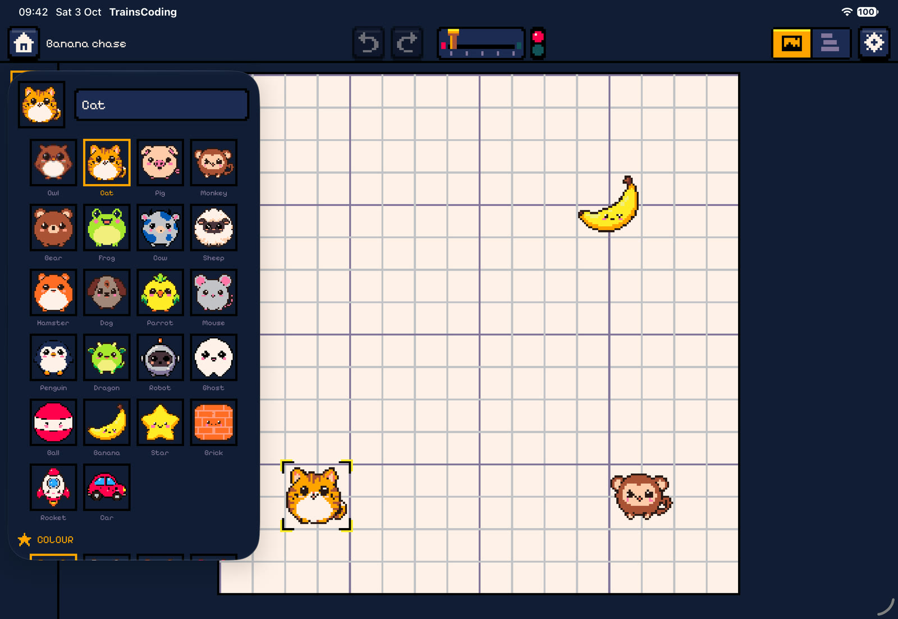
| Section | What it sets |
|---|---|
| Name | Up to 20 characters. The name is shown in target pickers (“When bumping Banana”). |
| Costume | The character’s picture (see Costumes). |
| Colour | One of 8 colour variants of the costume (palette swaps). |
| Hearts | 0–10 hearts at the start of each run. The default is 3. The Hearts wagon changes them, and reaching 0 fires When hearts run out. |
| Weight | Light, Normal or Heavy. Light characters fly twice as far when kicked; heavy ones push others around. See Physics. |
| Body | Physics: moves, falls with gravity and collides. Fixed: a solid obstacle that never moves by itself. Ghost: floats through other characters but still notices touches. |
| On stage | The list of placements with their tile positions. Add to stage places another copy on a free tile. The trash removes one; a character always keeps at least one. |
| Delete character | After a confirmation. Not possible for the last character in a project. Trains that pointed at the deleted character (for example When bumping Cat) are repaired by falling back to their default target. |
Costumes
There are 22 costumes: round, friendly 32 × 32 pixel creatures and objects, all painted with the same 32-colour palette.
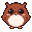
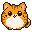
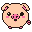
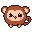
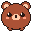
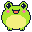
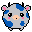
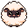
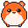
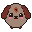
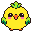
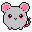
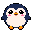
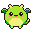
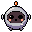
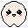
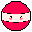
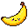
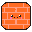
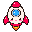
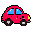
Each costume comes in 8 colour variants, made by swapping palette colours at run time. Variant 1 is the original. The Colour wagon switches variants during a run:
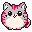
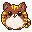
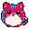
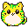
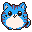
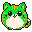
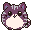
Settings
The gear in the toolbar opens Settings. The stage settings belong to the project and cannot be changed while it runs. The sound and layout settings belong to the device.
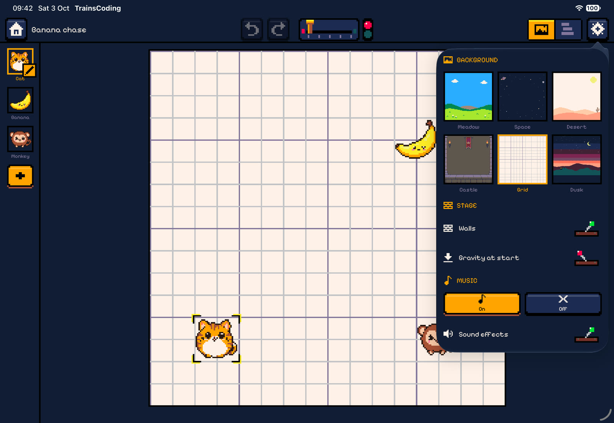
Backgrounds
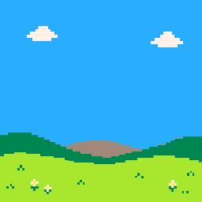
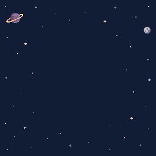
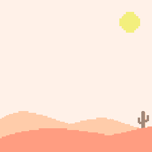
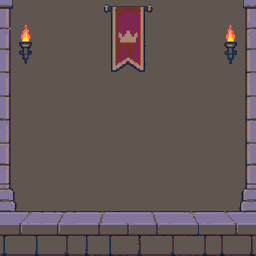
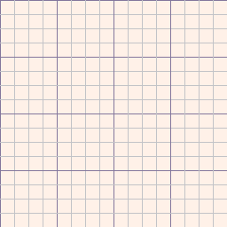
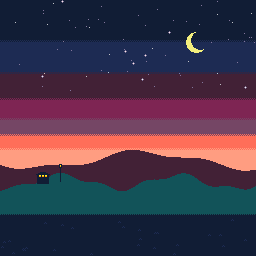
The Grid background shows tile lines, with heavier lines every 4 tiles. It is the best choice for lessons about coordinates.
All settings
| Setting | Scope | Effect |
|---|---|---|
| Background | project | One of the six themes above. New projects use Meadow. |
| Walls | project | On by default. Solid edges that characters bounce off, and that the bump and touching wall options detect. |
| Gravity at start | project | Off by default. Whether gravity is on when ▶ is pressed. The Gravity wagon can change it during the run. |
| Music | device | On or off. The START theme plays on the home screen, the CODING tracks while you edit and the GAME tracks during a run. A WIN or FAIL jingle plays once when a run ends. |
| Sound effects | device | The chiptune clacks, bumps and jingles. |
| Side by side on wide screens | device, iPad only | Use the Mac layout (stage and code side by side) instead of swap mode. |
Controls during a run
Touch and mouse
- Tap (or click) a character to fire its When tapped trains. If several overlap, the one created last (on top) gets the tap.
- If a Drag wagon has allowed it, the player can drag the character, on the x axis, the y axis or both. Physics characters are pulled along and can be flung; fixed ones follow the finger exactly.
The gamepad
When any train uses When a button is pressed, or any condition checks Button held, an 8-bit gamepad appears beside the stage during the run: a d-pad (← → ↑ ↓) and two buttons, red A and orange B. Buttons report both press and release, so programs can tell when a button is held down.

Keyboard (Mac)
| Key | Acts as |
|---|---|
| ← → ↑ ↓ | The d-pad |
| Space | Button A |
| Return / Enter | Button B |
| Q / E | Tilt left / tilt right |
| ⌘R · ⌘. | Run · Stop |
| ⌘Z · ⇧⌘Z | Undo · Redo |
Keys only drive the game while a program runs. Typing into a text field and shortcuts with ⌘, ⌃ or ⌥ pass through normally.
Tilt (iPad)
Tilting the iPad more than 20° to the left or right fires When tilted trains for that side. It must come back within 15° of level before the same side can fire again. Tilt is measured relative to how the screen is currently oriented, so it works the same in any landscape or portrait position.
What the stage shows
- Speech bubbles from Say, in the pixel font.
- Hearts: when a character’s hearts change, hearts fly out of it and the new count floats up.
- Message ripples: Send draws three expanding pixel rings in the message’s colour.
- A puff of white pixels where a character is removed.
- Variable tiles: Show variable puts a small “A 3” tile in the corner that updates live.
- The pen draws pixel lines behind characters with the pen down (see the Pen spiral).
- Win / lose: confetti and a flash, or a red flash with falling grey pixels.